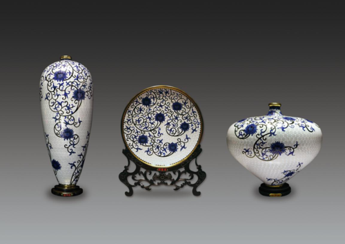
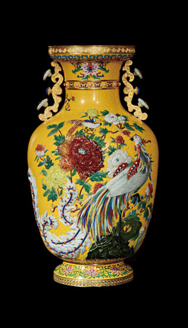
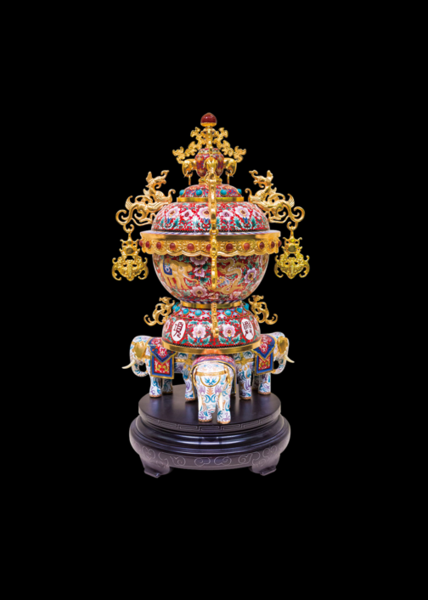
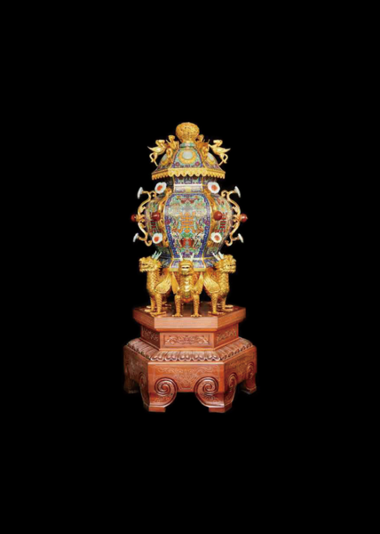
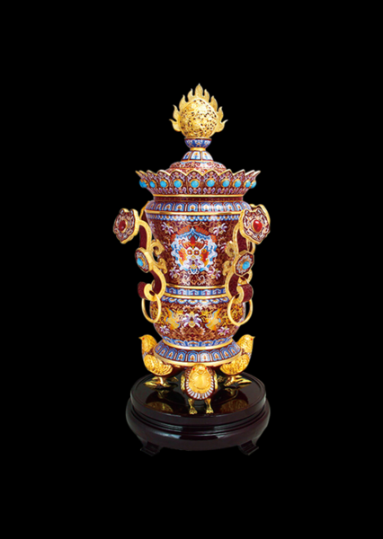
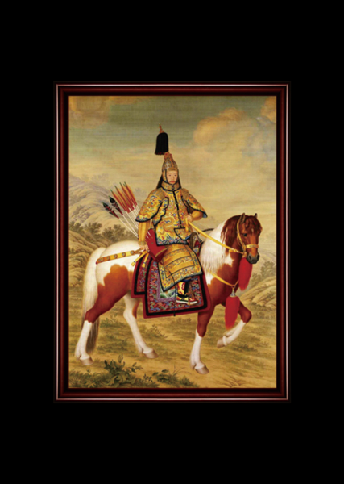
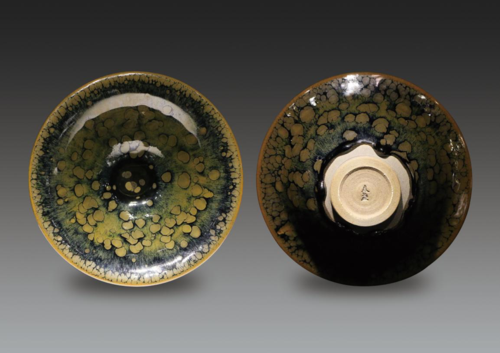

丁明鸿掐丝珐琅青花三宝
- 
-
安康，团圆，富贵被称為人生追求的三大梦想，《掐丝珐瑯-青花三宝》三件套便是顺应这个美好寓意而由著名景泰蓝大师丁明鸿先生亲自担纲设计监製，三件套器大气敦实，流线优雅赋以美感，铜胎之外白底上蓝色线条勾勒出图样的优美曲线，每件作品上均有100个同心圆，代表同心同德，万事圆满，吉庆如意，蓝白间色彩搭配鲜明准确，布局合理精妙，期间掐丝的金黄色在光线下熠熠生辉，处处透露出她皇家御用的高贵身份。作品不仅含蕴先进的设计理念，更是把景泰蓝传统技艺与中华古典青花文化完美结合，开创业界先河。整套作品高低错落有致，器形格调高雅，色彩乾净利落，爽心悦目。一经问世便荣膺全国艺术收藏品行业最高荣誉——优秀收藏品金奖。
刘永森景泰蓝嵌玉“迎客瓶
-
此珍品是工艺美术大师刘永森先生从艺五十多年的晚年杰作。他集合明清宫贡品艺术之花。结合当代人们意愿。经过一年多历程创作设计制作出了景泰蓝史上空前杰作。景泰蓝嵌玉珍品“迎客瓶”。此珍品高68公分。最大直径29公分。其造型为天柱玉立形。，两侧有如意耳稳雅威严而敬善。好似皇宫卫士含着甜美的微笑迎接八方来客。此珍品以景泰蓝为主架，花纹为桂花锦铺地，背面花纹为鹰鹤桃花象征着春天。此珍品主体画面。采用各类高档珍品宝石镶嵌而成的凤凰牡丹锦鸡花纹。其凤凰采用高档翡翠，青金，珊瑚，红、绿玛瑙，黄玉，松石，木变石多种天然宝石嵌制而成。其富丽堂皇的牡丹花和锦鸡采用红绿玛瑙、黄玉、珊瑚、翡翠、青金精雕而成。其两个如意耳，是使用雕銮工艺及精致翡翠红玛瑙、珊瑚镶嵌而成。瓶脖是由珊瑚嵌制。
此珍品总体感观，宫庭龙袍大黄色的景泰蓝造型威严玉立。已精雕的各类宝石嵌制相配更显凤凰牡丹生动逼真，玲珑剔透，珠光宝气，给人以富丽堂皇，富贵荣华，鸿福即降临之感。此珍品寓意为富贵常在，万事如意。
-

戴嘉林万象兴隆
- 
-
此珍品高2200px。作者主要以象和龙的形象元素，胎体下设三个象为足，胎体上端有四条龙及草龙攀附。主体胎上纹饰掐有象及龙，姿态生动。地儿纹为缠枝牡丹，寓意富贵昌盛，连绵不断。色调以红为主，以示喜庆吉祥。作者以象和象的谐音、龙和隆的谐音手法，给作品起名：万象兴隆。即歌颂当前社会繁荣的美好景象。作品整体效果华美富丽、金碧辉煌，充分展示了传统文化的艺术魅力和景泰蓝工艺之美。
刘永森六龙如意宝鼎
-
此珍品长1500px，宽1500px，高2400px，重60kg。以景泰蓝为主，并与多种工艺巧妙结合，其中主体将军罐体为掐丝景泰蓝工艺，底座六龙及罐体上盖六骏马，盖顶云龙圆顶为雕錾工艺，六尊如意，由翡翠雕制，如意头中心及寿桃，由红玛瑙雕刻的寿字嵌制而成。作品以刘龙连体作为基石，驮起鼎的主身。鼎为六方将军罐体型（六方为东西南北天地之和），气势磅礴，六尊如意，六面蝠兽，寓意万事如意，万寿无疆，福寿双全。六匹飞腾骏马寓意龙马精神，功成名就。作品整体感官高雅华贵，金碧辉煌，具有浓郁的皇家气势。此作品六方形体，六尊如意，六面蝠，六面兽，六骏马飞腾，六神龙驮宝鼎，亦取六六大孙之意。
-

戴嘉林平安如意尊
- 
- 此珍品高1750px。作者以主体（瓶型）配底足（鹌鹑形）及配件（四方如意），谐音寓意为：平（瓶）安（鹌）如意、构思桥面，主题鲜明。器型顶部为火焰球，寓意家居生活红红火火，球体有狮纹镂雕，“狮”与“事”谐音，有事事如意之意。纹样：瓶体部主要是小开关，纹样为蝙蝠、铜钱、双鱼、牡丹花图案，意寓为福（蝠）在眼前（钱）；富贵（牡丹花）有余（鱼）瓶下部为飞凤，凤是太平吉祥之鸟，瓶身通体安排缠枝牡丹，寓意富贵太平。作品上部僧帽及四方如意上嵌有绿色松石及红玛瑙玉，使得作品更加富贵、华美。平安如意尊艺术效果：创意新颖、构思巧妙，主题鲜明，器型古朴，华美大方，独具个性。
戴嘉林掐丝珐琅乾隆皇帝大阅图
-
此珍品4150px×4875px。由著名景泰蓝大师，景泰蓝技艺传承人，被誉为“色彩第一人”的戴嘉林大师亲自监制而成。本幅系弘历29岁时的戎装像，精神焕发，亦系郎世宁的盛年佳作。图中的表现技法基本上是采用中国传统的绘画工具和材料而取得了西方细笔油画的艺术效果。作者减弱了对景物、人马的素描手法，以平光处理明暗，线条在起到轮廓线的作用后几乎被色彩隐去，天空中云彩的画法全出自西法，近景的草叶近乎西方的静物写生，只有远山的结构保留了清宫写实山水的一些程序。
-

谢松青铂金油滴大盏

-
本作品采用后井建窑窑址村的土、釉石、草木灰、按宋代的建盏器型，经过1325度高温还原焰烧制而成，烧制工艺复杂，难度极大，曜变油滴大，底色青黑，从顶部均匀分布至底部，让人耳目一新、赏心悦目，大面积油滴均匀分布是对烧制技艺的重大挑战。本件作品釉面光洁、滴状晶体明显、三维晶体、曜变滴色彩幽兰夺目是建窑里难得的精品。
谢松青鹧鸪斑油滴大盏“迎客瓶
-
本作品采用后井建窑窑址村的土、釉石、草木灰、按宋代的建盏器型，经过1325度高温还原焰烧制而成，烧制工艺复杂，难度极大，曜变油滴大，底色翠绿，釉色明黄，从顶部均匀分布至底部，让人耳目一新、赏心悦目，大面积油滴均匀分布是对烧制技艺的重大挑战。本件作品釉面光洁、滴状晶体明显、三维晶体、色彩明亮夺目是建窑里难得的精品
-
